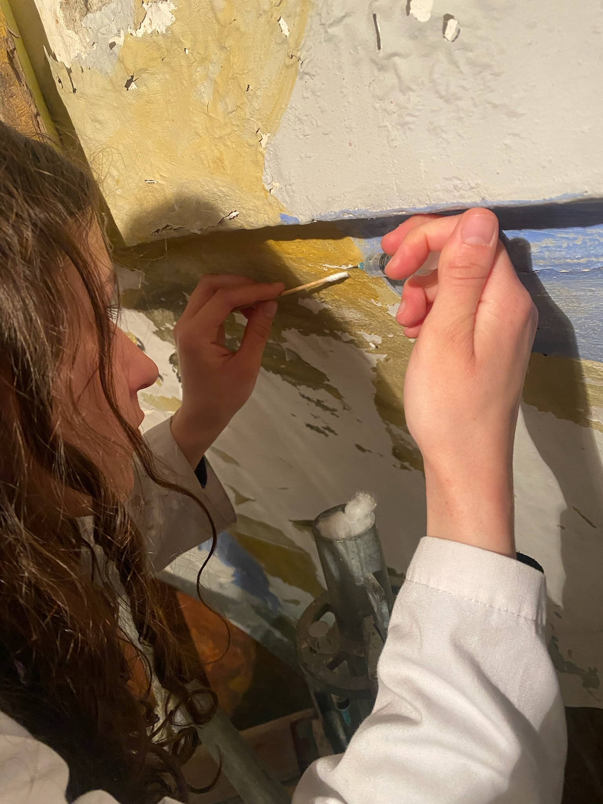

Documentar antes de intervenir.
Restauración de las pinturas murales de la capilla de la Virgen María del claustro de la Parroquia de Sant Agustí (El Raval, Barcelona). Proyecto organizado por el ESCRBCC y dirigido por el profesor Àlex Lorenz, desarrollado a lo largo de tres meses.
La intervención se inició con la realización de documentación gráfica y el examen organoléptico de las pinturas murales para determinar el estado de conservación y definir los criterios de intervención.
Documentación y examen
Consolidar, limpiar, reintegrar.
Los trabajos se centraron principalmente en la consolidación de la policromía, que presentaba levantamientos con riesgo de desprendimiento. Una vez estabilizada la capa pictórica, se procedió a la limpieza superficial de la suciedad acumulada.
Posteriormente se realizó la reintegración matérica y cromática de las zonas afectadas, devolviendo la lectura visual del conjunto.
Consolidación y reintegraciónEsta experiencia representó mi primer contacto con una intervención de gran formato sobre andamio. Me permitió desarrollar competencias de trabajo en equipo, planificación de tareas y organización del espacio de trabajo, aspectos fundamentales para garantizar la seguridad y la eficiencia en una intervención de conservación-restauración.